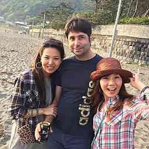
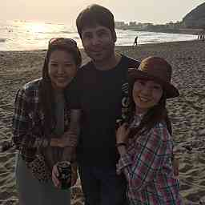

PARTICIPANTS:
DB ID: 0
Current name: You
Address book name: You
User name:
Phone Number:
Key:
DB ID: 466
Current name: MOTOKI
Address book name: モッチ ave会
User name: MOTOKI
Phone Number: 09032281170
Key: 090-322-81170
Messages:
2013/11/09 21:36:18, "0:You":
[LINE Maple Village]
Come play with us at LINE Maple Village!
(Binary)
2014/01/01 00:35:33, "466:MOTOKI":
2014/01/01 00:37:19, "0:You":
Happy new year!
2014/01/28 10:21:45, "466:MOTOKI":
お疲れ様です〜
今週の水曜日なんですがトランジットの新年パーティあります〜ご都合よければ^_^
1月29日水曜日
今年もまたあのイベントが帰ってくる！！！
毎年恒例のTRANSITグループ新年会を開催！！！！！
今年は会場であるヒルズカフェで当日夕方まで開催されている 「BMW i3カフェ」のアフターパーティと共同開催します！
今回も豪華＆CUTEなDJ陣はもちろん、ドラッグクィーンあり、 SEXYダンサーズ＆マッチョなGOGOダンサーズあり、 そしてとっておきのエンターテイナー達をお招きして新春を お祝い致します！
新年まだ笑い足りない方は参加必須！！
更にさらに1月生まれのトランジットグループ代表、中村貞裕のお祝いもしちゃいますので是非是非お誘い合わせの上ご参加くださいませ！！
もちろん入場無料！！
～トランジット大新年会2014～
日時: 1月29日 水曜日 19:00-26:00
会場: HILLS Cafe / SPACE （六本木ヒルズ内 ヒルサイド2F) http://www.roppongihills.com/shops_restaurants/restaurants/cafe/209550006.html 入場料：0円 主催：TRANSIT GENERAL OFFICE INC.｜
http://www.transit-web.com/
～DJｓ～
米原康正
高木康行
DJ 花見（冨沢ノボル & 半沢健）
ジュン☆中山 FANCYBOYS
月本えり
南まこと
内藤ゆり奈
MEME
植田せりな
NON
こばやしゆうこ
Emika Maimi
～スペシャル パフォーマンス～
パイレーツオブマチョビアン
カドザイル
yurisa (京都のビヨンセ!）
エガ島サブロウ（エガ島音楽事務所）
スペシャルふんどし和太鼓奏者
SEXYダンサーズ
GOGOマッチョダンサーズ
～MC～
ドラァグ・クイーン“ドリアン・ロロブリジーダ” 種村裕美(Transit Crew）
2014/04/17 18:53:15, "466:MOTOKI":
おつかれさまです。
恒例の葉山BBQ 5月3日土曜日に開催となりました。(雨天は4日)ご調整よろしくお願いします(^_-)
2014/04/17 18:56:56, "0:You":
いいですね
ありがとう！
2014/04/17 18:59:11, "466:MOTOKI":
よろしくお願いします(^_-)
2014/04/22 18:19:16, "466:MOTOKI":
おつかれさまです。
最終案ではないですが、こんな感じです^_^
▼▼▼▼▼▼▼▼▼▼▼▼
2014年GW 葉山一色ビーチBBQ♪
★2014年5月3日(土)13時★
▲▲▲▲▲▲▲▲▲▲▲▲
恒例の葉山一色海岸でBeach BBQ!!今年も開催です♪♪
一色海岸はプライベート感のある素敵な大人のビーチです♪
FOOD＆Drinkは飲み放題です♪（数に限りはありw）♡ジャークチキンにスペシャルフードも♡！
●日にち
★ 2014年5月3日(土)13時～17時終了予定。
※雨天の場合は４日（日）が予備日です。
●場所
神奈川県三浦郡葉山町一色海岸
神奈川県立近代美術館から脇の道入ってすぐ
●会費（仮）調整中
男性3500～4000円予定(BBQ食費ドリンク代込み)
女性2000~3000円予定(BBQ食費ドリンク代込み)
※ワイン類・缶酎ハイ&ビール(4本以上)持参で500円割引！！
※お手伝い＆スタッフの方は1000円割引。
お友達もお誘い合わせのうえご参加ください♪♪
人数はあらかじめ教えて頂けると助かります。
★★★★★★★★★★★★
集合について
●現地【１3：００】葉山一色海岸現地(詳細後送)
●準備を手伝ってくれる方【１０：００】(集合場所後送)
★★★★★★★★★★★★
一色海岸まで
■ バス・電車：JR逗子駅・京急新逗子駅より京急バス「海岸回り葉山行き」（逗11、逗12）で「三ヶ丘」下車徒歩1分
■ 車：横浜横須賀道路逗子インター逗葉新道を経て長柄交差点を左、つきあたり御用邸を右300m
(近くに駐車場少ないです。葉山御用邸前のスタンドの所が駐車場になりました)
★★★★★★★★★★★★
2014/04/22 18:26:53, "0:You":
了解です
2014/04/28 12:29:03, "466:MOTOKI":
BBQ誰が来ます？
教えてください(^_-)
2014/04/30 14:15:46, "466:MOTOKI":
昨日はおつかれ(^_-)
BBQなん人になりますか？
2014/04/30 14:16:46, "0:You":
1人かも
2014/04/30 14:17:37, "466:MOTOKI":
了解しました(^_-)
2014/05/04 15:37:45, "466:MOTOKI":
昨日はおつかれさまでした。楽しめました？（笑）
2014/05/04 15:41:58, "0:You":
楽しかった！
2014/05/04 15:42:31, "466:MOTOKI":
よかった！
いい出会いあった？（笑）
2014/05/04 15:43:57, "466:MOTOKI":
モッチ ave会 sent you a photo.
2014/05/04 15:53:34, "466:MOTOKI":
モッチ ave会 sent you a photo.
2014/05/31 16:20:47, "466:MOTOKI":
昨日はサンキュー！！
2014/07/15 10:57:49, "466:MOTOKI":
お疲れ様です。
葉山一色海岸BBQ 8/16にBBQありまご都合よかったら遊びに来てください(^_-)
2014/07/15 11:05:55, "0:You":
行くよ！ありがとう
2014/07/15 11:23:56, "466:MOTOKI":
よろしく(^_-)
2014/07/19 14:11:44, "466:MOTOKI":
おつかれさまです〜
豊洲で泡パーティのイベントあります。
海の日3連休
LIGHT UP NIPPONが初のビーチフェスを開催！
場所は、オープンしたばかりの豊洲・MAGIC BEACH。�
ステージでは音楽ライブやダンスなどのショーを実施。
今回は、大人から子供まで体験できるワークショップも開催します。
BARではLIGHT UP NIPPONコラボ商品のHANABEER（地ビール）やHANAVINO（ワイン） をはじめ、こだわりの自然派ワイン等各種ドリンクをご用意しています。
その他、東北の様々な商品をマルシェスタイルで販売します。
そして、夜のCLUBタイムには「泡パ」とのコラボが実現！
にぎやかなLIGHT UP NIPPON的夏フェスをお楽しみください！
＜イベント概要＞
LIGHT UP NIPPON Beach Fes 2014
2014年7月19日（土）～21日（月祝）
8：00～22：00（最終日は21：30まで）
@MAGIC BEACH “AREA-S“
〒135-0061 東京都江東区豊洲6-1-14
http://magicbeach.jp/index.html#mainLocation
最寄駅：東京臨海新交通臨海線ゆりかもめ「新豊洲」
＜花火募金（入場料）＞
￥1,000／1名（18歳以上）
ドリンクチケット1枚つき
※18歳以下の方でも、花火募金（入場料）をいただいた方には、ドリンクチケット1枚をお渡しします。
******************************
2014/08/04 21:26:59, "466:MOTOKI":
お疲れ様です。
葉山一色海岸Beach BBQ★のお知らせです。
時間など変更になったのでご確認いただいき、お返事お願いします。ご一緒のお友達の人数も教えてください。
今回は海の家『さざ波』で開催します。更衣室・シャワー付きなので水着持参で海水浴も楽しんでください。１1：００頃から準備はじめておりますので早めに来ていただいて海で遊んでいただいてもOK(^_-)
▼▼▼▼▼▼▼▼▼▼▼▼▼▼▼
2014年Summer葉山一色ビーチBBQ♪
★ 2014年8月16日(土)12時★
▲▲▲▲▲▲▲▲▲▲▲▲▲▲▲
●日にち
★ 2014年8月16日(土)12時～16時終了予定。
●場所
神奈川県三浦郡葉山町一色海岸(
「三ヶ丘」下車。降りて道を渡って、神奈川県立近代美術館横の脇の道入って海岸まで歩いてすぐです。『さざ波』という海の家の横です。
●会費
男性4000円予定
女性3000円予定
Drinkは飲み放題です♪（数に限りはあります）
人数はあらかじめお知らせください。
★★★★★★★★★★★★★★
集合について
●現地【１2：００】葉山一色海岸現地
●【１1：００】頃から準備はじめておりますので早めに来て海で遊んだりお手伝いしていただいてもOKです。
★★★★★★★★★★★★★★
一色海岸まで
■ バス・電車：JR逗子駅・京急新逗子駅より京急バス「海岸回り葉山行き」（逗11、逗12）「三ヶ丘」下車。降りて道を渡って、神奈川県立近代美術館横の脇の道入って海岸まで歩いてすぐです。『さざ波』という海の家の横です。
★★★★★★★★★★★★★★
2014/08/04 22:22:04, "0:You":
2014/08/04 22:22:16, "466:MOTOKI":
2014/08/12 10:56:54, "466:MOTOKI":
16日BBQトニー何人で来ますか？
2014/08/12 11:10:09, "0:You":
来ます
2014/08/12 11:15:45, "466:MOTOKI":
お友達連れてくる？
2014/08/12 11:22:22, "0:You":
オー！
誰も誘ってないけど。
周りの人に聞いてみます
2014/08/12 12:49:17, "466:MOTOKI":
人数わかったら
教えてね〜
2014/08/15 16:06:40, "466:MOTOKI":
お疲れ様〜
明日わかりましたか？
2014/08/15 16:07:16, "0:You":
ふじなちゃんを連れて来ます
2014/08/15 16:09:31, "466:MOTOKI":
了解しました(^_-)
2014/08/16 09:13:53, "466:MOTOKI":
おはようございます。天気も良くBBQ日和です〜
本日は12時スタート！お待ちしております(^_-)
会場までのご案内です、
■ JR逗子駅・京急新逗子駅より京急バス「海岸回り葉山行き」（逗11、逗12）で「三ヶ丘」下車してください。降りて道を渡って、神奈川県立近代美術館横の脇の道入って海岸まで歩いてすぐです。
『さざ波』という海の家の横でやってます。分からなければお電話下さい。
090-3228-1170
★MOTOKI MOCHIZUKI★
2014/08/16 09:17:41, "0:You":
2014/08/16 09:22:41, "466:MOTOKI":
2014/10/18 12:10:46, "466:MOTOKI":
本日夜あります。
Mercedes-Benz Fashion Week TOKYO 2015 S/S 6日目
VERSUS TOKYO 2015 S/S 本日開催！
吉井雄一さんがオーガナイザーを務める VERSUS TOKYO が、いよいよ本日開催されます。今回も渋谷ヒカリエを会場に、ファッションと音楽の融合を図るオールナイトイベントに。入場無料、どなたでも参加できますので、ぜひ渋谷ヒカリエに遊びに来てください！
音楽イベント
24:30から渋谷ヒカリエ 9Fで2つの音楽イベントが開催されます。入場無料、ドリンクなどもフリーで提供される贅沢なイベントになります。
(1) 24:30～28:00／ヒカリエホール B
C.E and THE TRILOGY TAPES AFTER PARTY
ANTHONY NAPLES／REZZETT／WILL BANKHEAD／VIDEO: BACON
(2) 24:30～28:00／ホワイエA (ホールA前)
DETTO K(D.TT.K)／DEXPISTOLS／MASATOSHI UEMURA(bonjour records)／TETSUYA SUZUKI(honeyee.com／.fatale)
IDチェックについて
23:30以降に開催されるC.Eのコレクション発表、各音楽イベントへは20歳未満の方はご入場いただけません。 ご入場は、渋谷ヒカリエ11Fの受付でIDチェック後、エスカレーターで9Fにお越し下さい。
受付では、以下の写真付きIDのうち1点のご提示をお願い致します。
※実年齢に関係なくIDをお持ちでない方のご入場はお断りいたします。
2014/10/18 12:20:40, "0:You":
ありがとう
今日は予定が入ってる。
行きたかったけど〜
また今度。
2014/10/18 12:22:04, "466:MOTOKI":
了解〜
また(^_-)
2014/11/29 16:24:38, "466:MOTOKI":
おつかれさまです。
今、代々木公園のスペインフェスだよ！いますか？（笑）
2014/11/29 16:46:51, "0:You":
いたよ！
雨が降り出したら帰った
2014/11/29 16:56:25, "466:MOTOKI":
いい感じだよ！（笑）